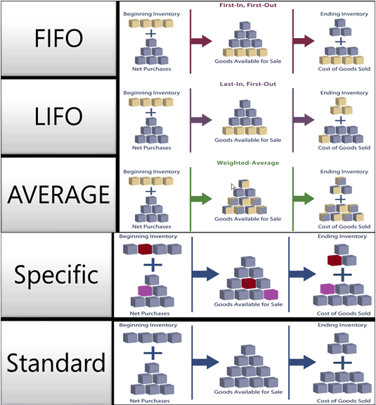

Design Details: Costing Methods
The costing method determines if an actual or a budgeted value is capitalized and used in the cost calculation. Together with the posting date and sequence, the costing method also influences how the cost flow is recorded.
Note
You cannot change an item's costing method if item ledger entries exist for the item.
Information will soon be published here about workarounds to changing a costing method in special situations.
The following methods are supported in Business Central:
| Costing method | Description | When to use |
|---|---|---|
| FIFO | An item’s unit cost is the actual value of any receipt of the item, selected by the FIFO rule. In inventory valuation, it is assumed that the first items placed in inventory are sold first. |
In business environments where product cost is stable. (When prices are rising, the balance sheet shows greater value. This means that tax liabilities increase, but credit scores and the ability to borrow cash improve.) For items with a limited shelf life, because the oldest goods need to be sold before they pass their sell-by date. |
| LIFO | An item’s unit cost is the actual value of any receipt of the item, selected by the LIFO rule. In inventory valuation, it is assumed that the last items placed in inventory are sold first. |
Disallowed in many countries/regions, as it can be used to depress profit. (When prices are rising, the value on the income statement decreases. This means that tax liabilities decrease, but the ability to borrow cash deteriorates.) |
| Average | An item’s unit cost is calculated as the average unit cost at each point in time after a purchase. For inventory valuation, it is assumes that all inventories are sold simultaneously. |
In business environments where product cost is unstable. When inventories are piled or mixed together and cannot be differentiated, such as chemicals. |
| Specific | An item’s unit cost is the exact cost at which the particular unit was received. | In production or trade of easily identifiable items with fairly high unit costs. For items that are subject to regulation. For items with serial numbers. |
| Standard | An item’s unit cost is preset based on estimated. When the actual cost is realized later, the standard cost must be adjusted to the actual cost through variance values. |
Where cost control is critical. In repetitive manufacturing, to value the costs of direct material, direct labor, and manufacturing overhead. Where there is discipline and staff to maintain standards. |
The following image shows how costs flow through the inventory for each costing method.

Costing methods differ in the way that they value inventory decreases and if they use actual cost or standard cost as the valuation base. The following table explains the different characteristics. (The LIFO method is excluded, as it is very similar to the FIFO method.)
| FIFO | Average | Standard | Specific | |
|---|---|---|---|---|
| General characteristic | Easy to understand | Based on period options: Day/Week/Month/Quarter/Accounting Period. Can be calculated per item or per item/location/variant. |
Easy to use, but requires qualified maintenance. | Requires item tracking on both inbound and outbound transaction. Typically used for serialized items. |
| Application/Adjustment | Application keeps track of the remaining quantity. Adjustment forwards costs according to quantity application. |
Application keeps track of the remaining quantity. Costs are calculated and forwarded per the valuation date. |
Application keeps track of the remaining quantity. Application is based on FIFO. |
All applications are fixed. |
| Revaluation | Revalues invoiced quantity only. Can be done per item or per item ledger entry. Can be done backward in time. |
Revalues invoiced quantity only. Can be done per item only. Can be done backward in time. |
Revalues invoiced and un-invoiced quantities. Can be done per item or per item ledger entry. Can be done backward in time. |
Revalues invoiced quantity only. Can be done per item or per item ledger entry. Can be done backward in time. |
| Miscellaneous | If you back-date an inventory decrease, then existing entries are NOT reapplied to provide a correct FIFO cost flow. | If you back-date an inventory increase or decrease, then the average cost is recalculated, and all affected entries are adjusted. If you change the period or calculation type, then all affected entries must be adjusted. |
Use the Standard Worksheet page to periodically update and roll up standard costs. Is NOT supported per SKU. No historic records exist for standard costs. |
You can use specific item tracking without using the Specific costing method. Then the cost will NOT follow the lot number, but the cost assumption of the selected costing method. |
Example
This section gives examples of how different costing methods affect inventory value.
The following table shows the inventory increases and decreases that the examples are based on.
| Posting Date | Quantity | Entry No. |
|---|---|---|
| 01-01-20 | 1 | 1 |
| 01-01-20 | 1 | 2 |
| 01-01-20 | 1 | 3 |
| 02-01-20 | -1 | 4 |
| 03-01-20 | -1 | 5 |
| 04-01-20 | -1 | 6 |
Note
The resulting quantity in inventory is zero. Consequently, the inventory value must also be zero, regardless of the costing method.
Effect of Costing Methods on Valuing Inventory Increases
FIFO/LIFO/Average/Specific
For items with costing methods that use actual cost as the valuation base (FIFO, LIFO, Average, or Specific), inventory increases are valued at the item’s acquisition cost.
The following table shows how inventory increases are valued for all costing methods except Standard.
| Posting Date | Quantity | Cost Amount (Actual) | Entry No. |
|---|---|---|---|
| 01-01-20 | 1 | 10.00 | 1 |
| 01-01-20 | 1 | 20.00 | 2 |
| 01-01-20 | 1 | 30.00 | 3 |
Standard
For items using the Standard costing method, inventory increases are valued at the item’s current standard cost.
The following table shows how inventory increases are valued for the Standard costing method.
| Posting Date | Quantity | Cost Amount (Actual) | Entry No. |
|---|---|---|---|
| 01-01-20 | 1 | 15.00 | 1 |
| 01-01-20 | 1 | 15.00 | 2 |
| 01-01-20 | 1 | 15.00 | 3 |
Effect of Costing Methods on Valuing Inventory Decreases
FIFO
For items using the FIFO costing method, items that were purchased first are always sold first (entry numbers 3, 2, and 1 in this example). Accordingly, inventory decreases are valued by taking the value of the first inventory increase.
COGS is calculated using the value of the first inventory acquisitions.
The following table shows how inventory decreases are valued for the FIFO costing method.
| Posting Date | Quantity | Cost Amount (Actual) | Entry No. |
|---|---|---|---|
| 02-01-20 | -1 | -10.00 | 4 |
| 03-01-20 | -1 | -20.00 | 5 |
| 04-01-20 | -1 | -30.00 | 6 |
LIFO
For items using the LIFO costing method, items that were purchased most recently are always sold first (entry numbers 3, 2, and 1 in this example). Accordingly, inventory decreases are valued by taking the value of the last inventory increase.
COGS is calculated using the value of the most recent inventory acquisitions.
The following table shows how inventory decreases are valued for the LIFO costing method.
| Posting Date | Quantity | Cost Amount (Actual) | Entry No. |
|---|---|---|---|
| 02-01-20 | -1 | -30.00 | 4 |
| 03-01-20 | -1 | -20.00 | 5 |
| 04-01-20 | -1 | -10.00 | 6 |
Average
For items using the Average costing method, inventory decreases are valued by calculating a weighted average of the remaining inventory on the last day of the average cost period in which the inventory decrease was posted. For more information, see Design Details: Average Cost.
The following table shows how inventory decreases are valued for the Average costing method.
| Posting Date | Quantity | Cost Amount (Actual) | Entry No. |
|---|---|---|---|
| 02-01-20 | -1 | -20.00 | 4 |
| 03-01-20 | -1 | -20.00 | 5 |
| 04-01-20 | -1 | -20.00 | 6 |
Standard
For items using the Standard costing method, inventory decreases are valued similar to the FIFO costing method, except valuation is based on a standard cost, not on the actual cost.
The following table shows how inventory decreases are valued for the Standard costing method.
| Posting Date | Quantity | Cost Amount (Actual) | Entry No. |
|---|---|---|---|
| 02-01-20 | -1 | -15.00 | 4 |
| 03-01-20 | -1 | -15.00 | 5 |
| 04-01-20 | -1 | -15.00 | 6 |
Specific
Costing methods make an assumption about how cost flows from an inventory increase to an inventory decrease. However, if more accurate information about the cost flow exists, then you can override this assumption by creating a fixed application between entries. A fixed application creates a link between an inventory decrease and a specific inventory increase and directs the cost flow accordingly.
For items using the Specific costing method, inventory decreases are valued according to the inventory increase that it is linked to by the fixed application.
The following table shows how inventory decreases are valued for the Specific costing method.
| Posting Date | Quantity | Cost Amount (Actual) | Applies-to Entry | Entry No. |
|---|---|---|---|---|
| 02-01-20 | -1 | -20.00 | 2 | 4 |
| 03-01-20 | -1 | -10.00 | 1 | 5 |
| 04-01-20 | -1 | -30.00 | 3 | 6 |
See Also
Design Details: Inventory Costing
Design Details: Variance
Design Details: Average Cost
Design Details: Item Application
Managing Inventory Costs
Finance
Working with Business Central